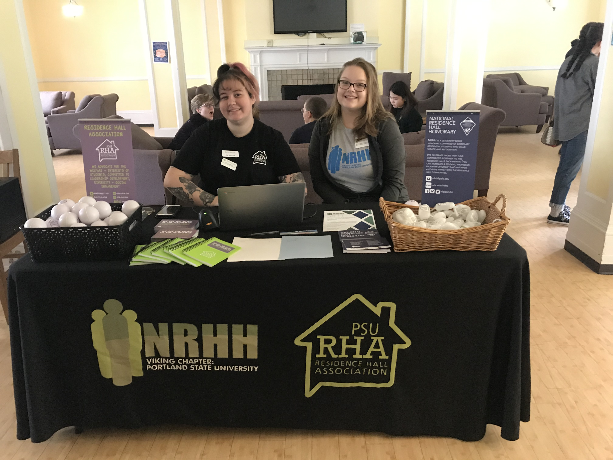
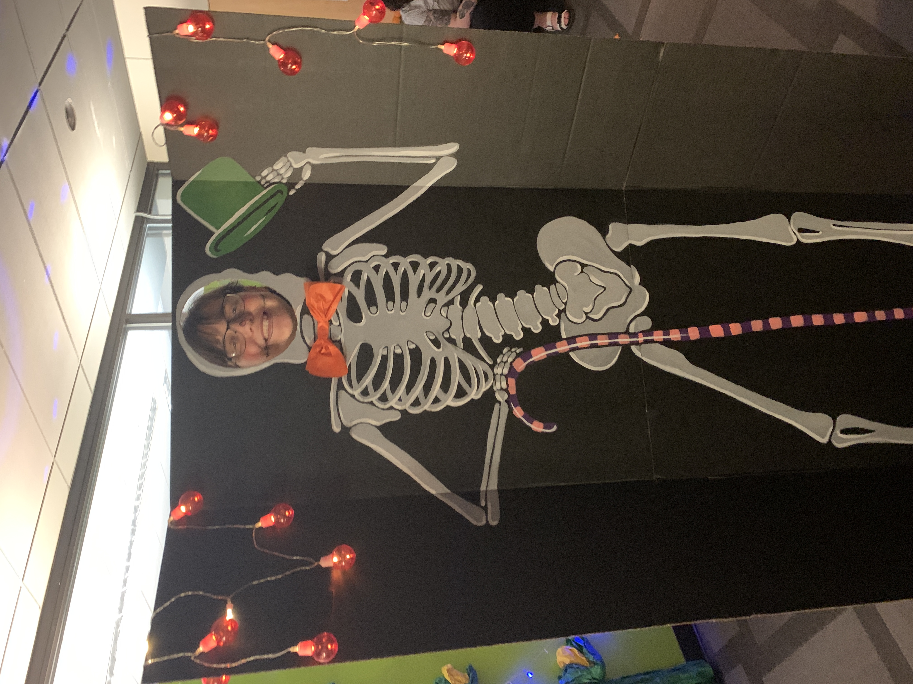
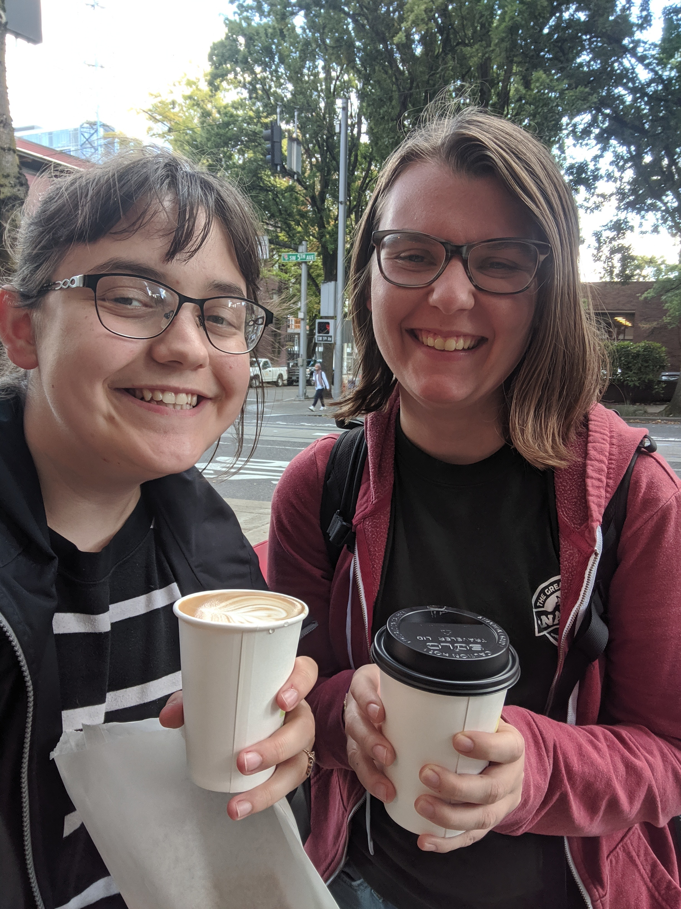
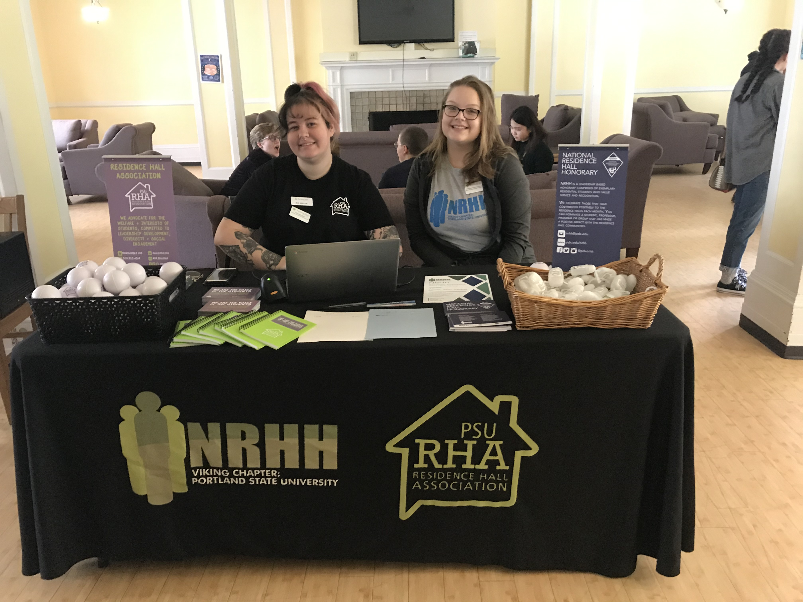
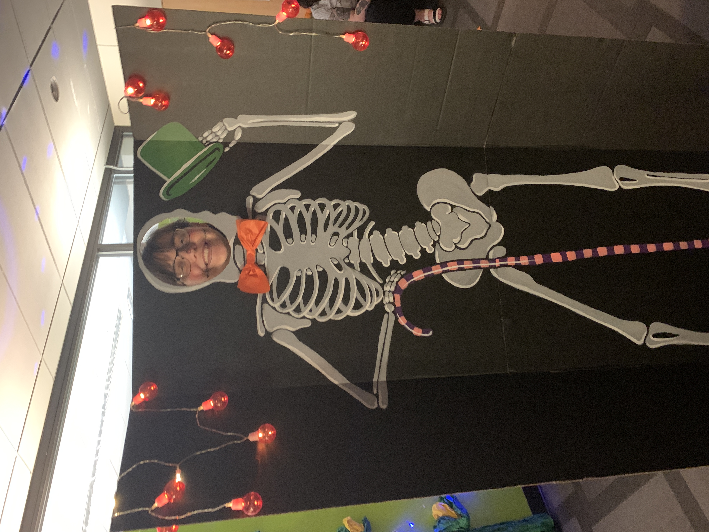
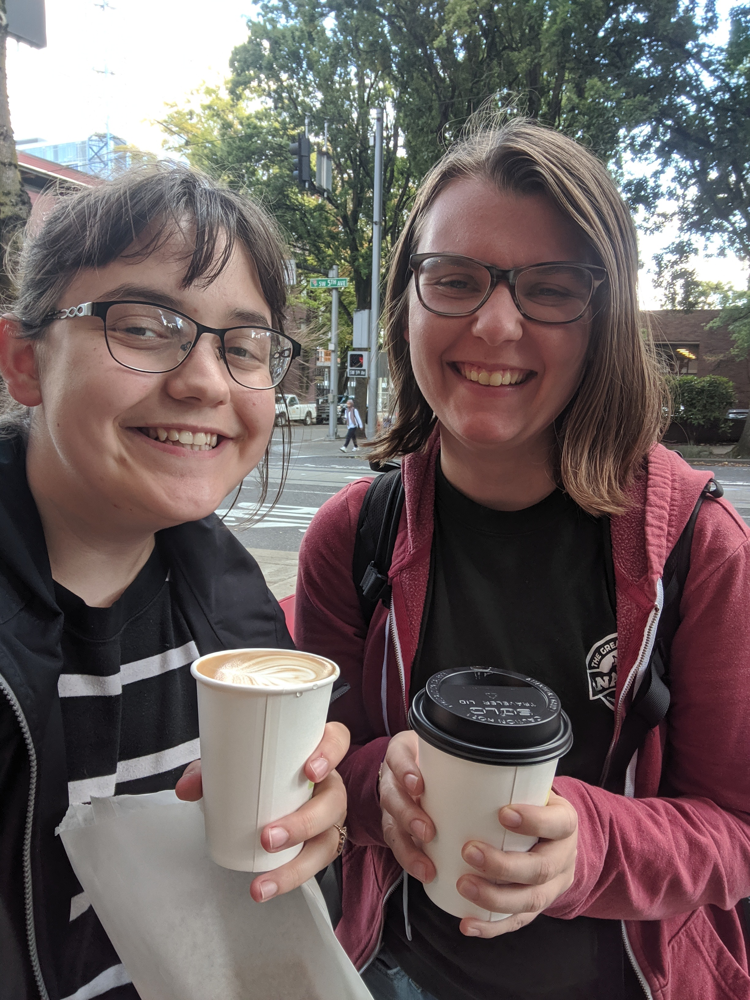

We, the members of the Residence Hall Association at Portland State University, develop community on campus by embracing the diversity of residents, encouraging the development of leadership, promoting successful academic lifestyles, and inspiring students to be active members of the on-campus community. RHA “Why” Statement “To provide a voice and sense of community for the residents so that Portland State University feels like home.” During the summer before the 2019-2020 school year we read Start With Why by Simon Sinek. While reading the book we also would write weekly responses to the chapters on D2L. It was kinda like a book club but just with a little more structure. The purpose of reading the book was to get everyone excited about their positions for the year as well as help us form our purpose. Our why statement helps us be able to explain to others what we do and why we exist. NRHH also created a “why” statement that you will see later.
NRHH’s Why Statement: “To uphold Service and Recognition in the community so that we can cultivate academic success and strengthen interpersonal relationships among residents.”
Throughout the school year, we try to bring recognition and service programs to the individuals living on campus. In the past year, we have created new programs such as “Congrats Chats” where we welcomed all the new incoming first year residents with a note congratulating them on starting college and some candy. The benefit of this program was that it would hopefully boost first-year students’ spirits if they were feeling overwhelmed by their classes and lost into how to get involved on campus. Getting through your first week of college can be tough and a nice welcome and congratulations will hopefully spread positivity throughout the halls. We also renovated an older program that hadn’t been done in several years, the program was called Books and Bagels. It was a program that we hosted the Sunday before finals began where students were invited to come into one of the lounge areas to study, eat some food, get some coffee, and meet new people. NRHH will be taking on an event that happens during the last week of the term, “Refuel Your Brain Week”. We will be taking on Wellness Wednesday. This is in collaboration with other student leaders in housing! NRHH would not be possible without the hard work of our chapter members, chapter involvement is really crucial to our success as an organization as we need all hands on deck to pull off engaging programs in the residence halls.
 





Goals achieved during the 2019-2020 year
Put on 6-8 large scale programs based on the RHA Parthenon Model (see appendix A) Reviewed our constitution and made changes to it in order to improve how the organization functions Built a stronger relationship with councils by having regular 1:1’s between RHA executive members and their council counterparts. Worked with our advisor to revamp the training RHA executive board members go through before school starts Built a stronger relationship with other student leaders within the housing department by giving presentations about our organizations during fall training and at team developments that happen once a month Restructured the way we manage our operating budget by creating a new budget template for the 2019-2020 academic year Successfully advocated for more funds from the department for the organization RHA had 723 attendees overall at the programs put on 2019 spring and fall terms In 2019 we completed 6 projects that physically improved the residential halls through the beautification task force, examples of projects being providing new furniture to residence halls and common areas or buy TVs for common areas in King Albert and Saint Helens (Residence Halls) Sponsored and are helping create the new ReLEC Center (Residential Leadership and Engagement Center)
Challenges
A major challenge we have continuously struggled with is the lack of knowledge of the organizations within the residents and the rest of the department. We have been trying to educate who we are and why we exist to residents through programming and other initiatives. For example, during move-in weekend and the first week of school we put on four different programs that heavily focused on who we are and how to get involved. We have also tried to better communicate what we do with other student leaders so they can help communicate our mission to residents. During fall training we put together three presentations about our organizations that the other student leaders got to attend. This is the first time we got to do something like this at fall training and many said they found it extremely helpful. Another challenge we have faced over the past year is high turnover rate of executive board members due to the number of expectations placed upon them. At the end of the 2018-2019 academic year we reevaluated the responsibilities of each position. Through doing this we were able to make sure each position on the executive board now has an even amount of responsibilities to avoid people becoming overwhelmed throughout the year. We are continuing to work with the department to also lessen the amount of requirements they place upon us when it comes to summer and fall training in order to help executive board members not want to quit before the school year even begins.